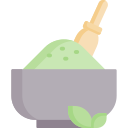
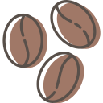
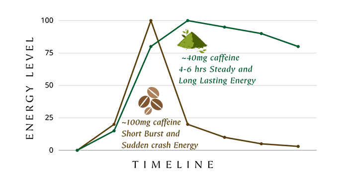

matcha vs kaffe

Kroppen optager koffein fra matcha anderledes, det gør den på grund af matchas l-theanine indhold, som kan gøre dig mere rolig og fokuseret. Derudover giver matcha en mere stabil energi, som holder længere. Man oplever ikke afhængighed af matcha.

Koffein i kaffe kan være svært for kroppen at optage, derfor kan man opleve kafferystelser - man kan også føle angst eller stress, efter en kop kaffe. Med kaffe oplever man kortere spikes af energi, hvorefter man crasher igen - og får trang til en kop mere.
